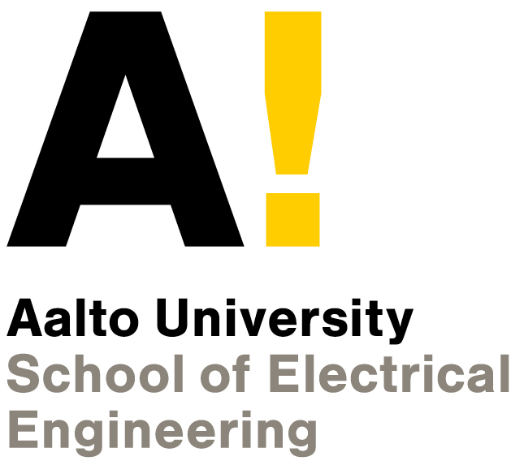

Augmented CycleGANs for continuous scale normal-to-Lombard speaking style conversion
Shreyas Seshadri, Lauri Juvela, Paavo Alku and Okko Räsänen
Speaking style conversion from Normal to Lombard using Augmented CycleGANs and CycleGANs modelled with a CNN with gated units and resefual connections